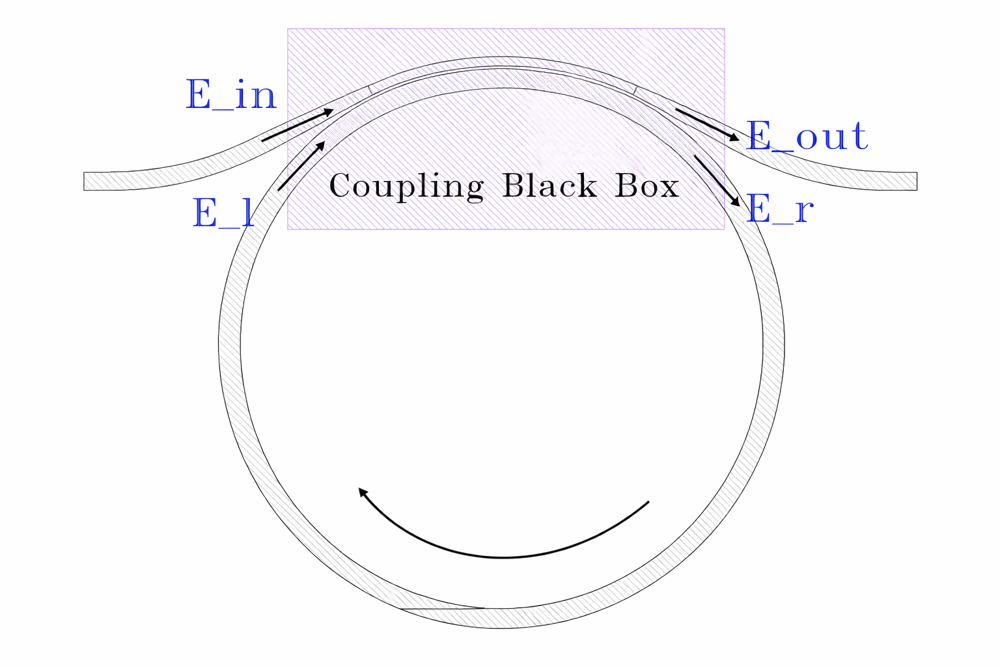
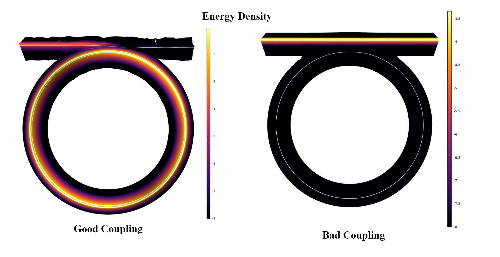

Macroscopic description of a ring resonator with a coupler¶
Ring resonator is the basic component in photonics. It usually consists of a ring and a bus waveguide that sends electromagnetic wave into the ring and generates resonance inside. This section describes the macroscopic process of how a plane wave \(e^{iwt}\) is coupled into the ring. In principle, the knowledge here is universal to any resonator plus coupler structure. It could be a simple two-mirror cavity, a LC resonator circuit, or any microwave cavity structure.
Going back to the ring, below is a typical structure that we are going to analyze. We are sending a plane wave(\(E_{in}\)) through the input port. Part of it couples into the right side of the ring(\(E_{r}\)), circulates to the left side(\(E_{l}\)), and eventually recouples back to the bus waveguide and interfere with the transmitted(\(E_{in}\)) to produce the output field(\(E_{out}\))
Under certain coupling condition, you are going to see all of the energy are efficiently coupled into the resonator to generate resonance. None of them is coming out of the output port--all consumed by the resonator. The resonance can build up tremendous energy density inside the resonator, and can possibly amplifying the power by 10000x depending on how good your ring is. Such amplification is powerful in enhancing light and material interaction and can efficiently drive nonlinear optical process inside the cavity.
In addition to the schematic, I have attached my simulation results under different coupling conditions. Under good coupling, you successfully dump a massive load of energy into the ring, while in the bad coupling case, the plane wave just passes through, completely ignoring the ring.
 
The term coupling might appear ambiguous at present. It is a term that describes the process of sending EM field into the ring and is affected by the offset of input field(\(\omega\)) from resonance frequency(\(\omega_{res}\)),and whether the internal loss of the ring matches the coupler loss(similar concept as impedance matching in RF circuit). The detailed geometry of how the bus waveguide wraps certainly affects the coupling. However, that belongs to the microscopic picture.
As a macroscopic picture, we simply model the coupling process as a black box and treat it as a 2x2 transfer matrix. This model aims to macroscopically describe how good your coupler is in coupling energy into the ring, and how the output spectrum behaves under different coupling conditions.
$$ \kappa^2 + \beta^2 = 1 $$ where all of the variables are real.
Such setting assumes that the coupling process is lossless and symmetric, as you can see from the structure of the Hamiltonian. It is symmetric in two aspects. First, spatially, the direction does not matter. Bus to bus is the same as ring to ring. Ring to bus is the same as bus to ring. I.e. \(H_{11} = H_{22}, H_{12} = H_{21}\). Second, the process obeys time-reversal symmetry. Therefore, the off-diagonal term carry the same phase. In fact, this is an interesting property of SU(2) group under these two symmetry. Given a lossless and symmetry coupling SU2 matrix, one can further prove that: $$ H_{11} = H_{22} = \beta e^{i\theta/2} $$
As light circulates within a cavity, it is also subject to a loss per round trip due to scattering or material imperfection. Therefore, we use \(\alpha\) to describe transmission per round trip when light is circulating: $$ |E_{l}| = \alpha|E_{r}| $$
Without material dispersion, the time for the wave to complete a round trip is simply given by the effective length divided by speed of light c: $$ T_{rt} = nL/c $$
Also as the light is circulating from the right to the left, the phase information at the left side is always T slower than the right side. $$ E_l(t) = \alpha E_r(t-T) $$ Apply Fourier transform \(\hat{\mathcal{F}}\) on both sides. Note that with hat, the variable is in f-domain, while without the hat, that is in time-domain. $$ \hat{E_l} = \alpha e^{-i\omega T} \hat{E_r} $$
Proof
Apply Fourier transform \(\hat{\mathcal{F}}\) to both sides: $ \hat{\mathcal{F}}{E_l(t)}=\hat{\mathcal{F}}{\alpha\,E_r(t-T)} $
The initial matrix equation also needs to be swapped to the f-domain. Plug the above relationship between left and right circulating field into the transfer equation:
Proof
One is always interested in resonance case \(\omega T = m \cdot 2\pi\). Rewrite \(\omega = \omega_{res} + \Delta\omega\), where your pump frequency is slightly drifted away from the resonance:
The free spectral range(\(\Delta \nu\)) is defined as \(\frac{1}{T}\):
To package them up, let's define the electric field decay rate as \(\gamma\), then the photon life time is decaying at \(2\gamma\).
Proof
The unit for \(E^2\) is number of photon(N) per second, thus:
Photon life time is:
We already know E decays at \(\gamma\): \(\frac{d}{dt}E = -\gamma E\)
We distinguish the loss contribution here:
-
T means total, which represents the loss rate when ring is facing losses both from the cavity itself and the coupler.
-
0 means intrinsic, which represents the loss rate when the ring is facing loss purely from the cavity.
-
E means external, which means the loss rate when the ring is facing loss purely from the coupler $$ \gamma_T = (1-\alpha\beta) \Delta \nu $$
for most of the modern ring resonators, \(\alpha\) and \(\beta\) are very closes to unity, so if one taylor expands them to first order. Intuitively, this is just total loss coming from internal and external loss.
Proof
Set
Compute the product:
Therefore
First-order Taylor (drop \(\epsilon_\alpha\epsilon_\beta\)):
So
Also
Add them:
Thus
Recall that the definition of quality factor is: $$ Q = \omega_{res}\cdot \tau_{photon} = \frac{\omega_{res}}{2\gamma} $$
Above expression can be defined in terms of quality factor: $$ \boxed{ \frac{1}{Q_T} = \frac{1}{Q_0} + \frac{1}{Q_E} } $$